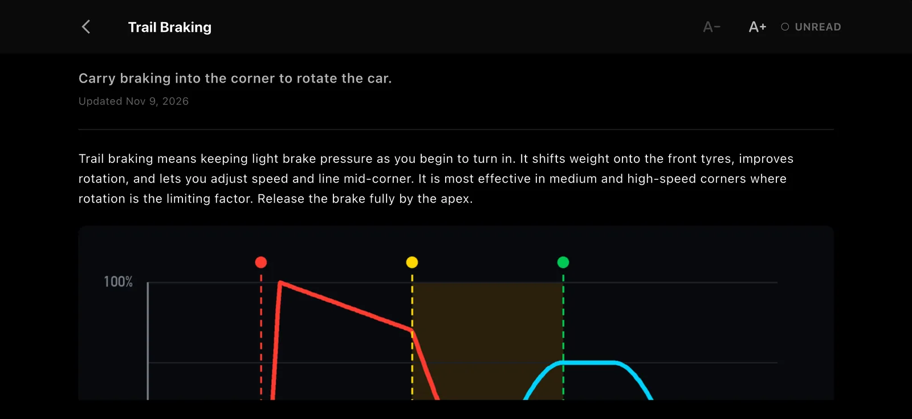

How it works
Racing Tips
Short, practical lessons on driving technique, race tools, preparation and the rules, each with an exercise.
Four groups of tips
Open Racing Tips from the Home screen. You don't need a game or a session running.
- Driving technique: trail braking, the racing line, corner exit, wet driving, defending.
- Race tools: ERS, DRS, F1 26 power management, fuel, tyre management, reading your delta display.
- Preparation: setups, race planning, weekend planning, qualifying prep, pit strategy.
- Rules & penalties: tyre compounds C0–C6, 2026 battery modes, track limits and more.

Read, practise, mark as read
- Tap a tip to open it: a one-line summary, then the explanation. A− and A+ at the top make the text smaller or larger; JMD keeps your choice for every tip.
- Use the PRACTICE THIS box. It gives you one concrete thing to try in your next session.
- Tap Mark as read when you're done. The tip's dot turns green in the list, so you can see what's left. Tap Mark as unread to undo.

New tips arrive on their own
Many tips now come with diagrams, and the collection is updated regularly. When you open the app it checks for new tips and downloads them in English, French and Spanish; pull down on the list to check again. Your tips stay available offline.
- Sort by Category, Recent (latest updates first) or Unread.
- A new tip, or one that has changed since you read it, shows as unread again, so nothing new slips past.
Free and Jax Pro
Everything in this guide is free. No subscription is needed.